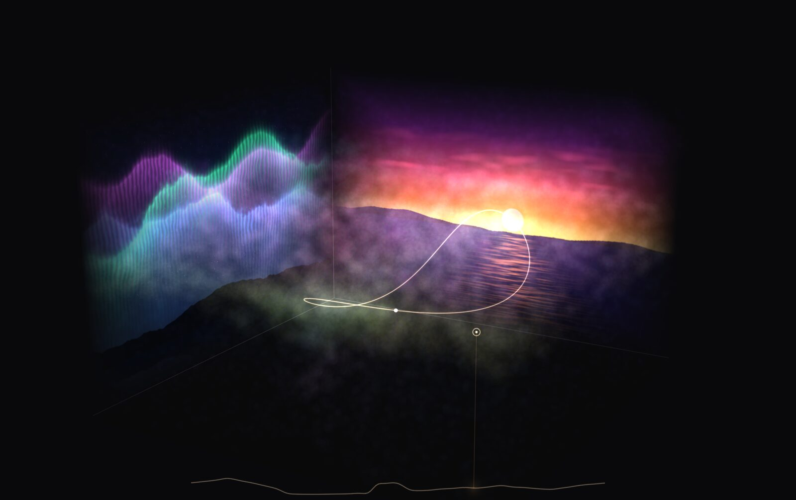
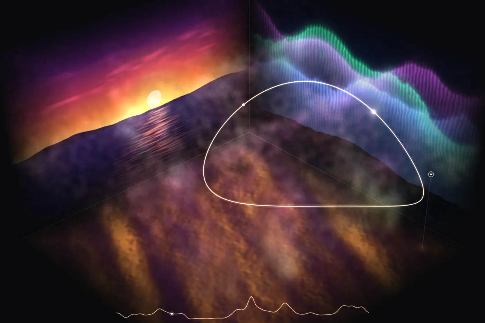
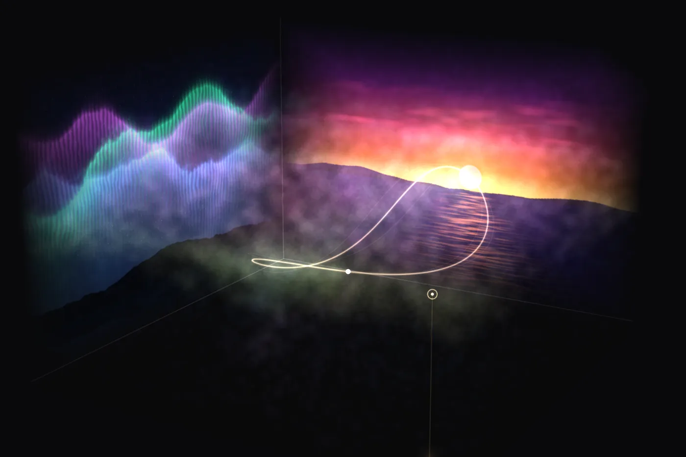
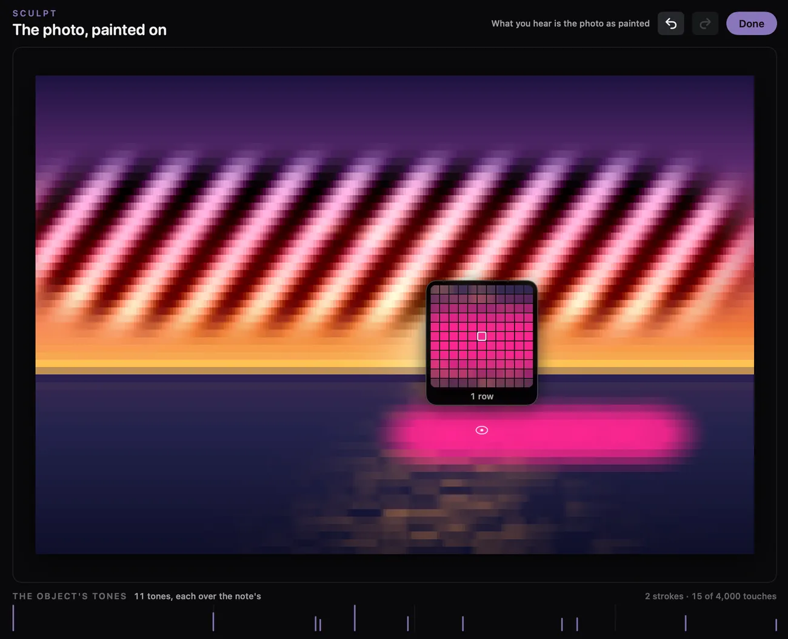
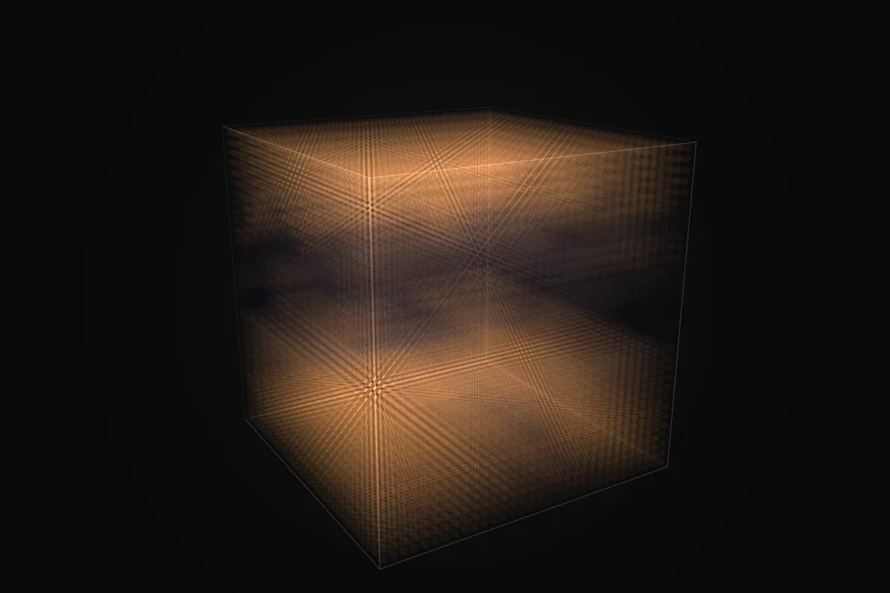
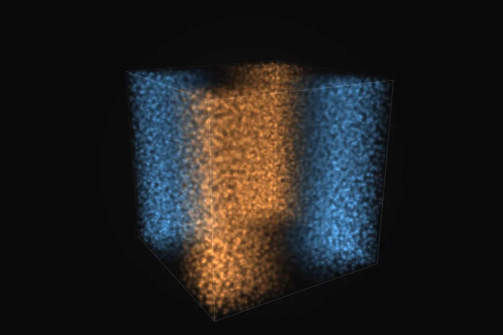

Space and Sculpt
One photo is an object. Two photos are a room. This chapter is the third way to play a photo, and then how to change any photo sound by hand, with a brush.
The idea, one step at a time

- The first photo is the front. Look at the space head-on and you see it.
- The second photo is the side. Turn the room and there it is.
- The block between them is the instrument. Where both photos are bright, the block is light. Where they're dark, it's heavy. Where they're colourful, it's stiff. The app treats the block as a simple vibrating material and solves for the tones that model rings at.
- Every note does two things. A mallet strikes the block, and it rings in its own notes. And a loop flies round inside it: what the loop passes through, once round, is one cycle of the tone you hold.
- Where the loop is, is the sound. Move it and the tone changes.
A third photo is the view from above. With it, the block is shaped from three sides.

Making a space
The quick way: drop two or three photos on the window together. The first is the front, the second the side, the third the top. Mac The file window takes several at once too. iPad The photo picker takes one at a time, so use the steps below.
One at a time:
- Add a photo the usual way. That's the front.
- Tap Photo again. It's now a menu. Choose Add a second photo.
- Wait two to four seconds while the line says Making the space…
- The space arrives: the photos fly to their walls, the cloud forms, a strike rings it, the loop draws itself. A touch skips this.
The How the photo plays button now reads Space. From the same menu you can add a third photo, change either one, or remove them. Remove the second photo and the first plays alone again.
Playing it with your hand
| You do | It does |
|---|---|
| Drag empty space | Turns the room. Let go and it coasts. |
| Pinch, or scroll | Comes closer or backs away. |
| Drag the loop | Moves it through the block. The tone changes as it goes. |
| Drag the loop's bead | Makes the loop bigger or smaller. |
| Drag the mallet | Moves where the strike lands. |
| Double-tap the mallet | Puts it back where the photos placed it. |
| Tap the cloud | Strikes it right there. |
| Press harder | Pushes the loop deeper, into the second photo. |
Pressing harder
- iPad With an Apple Pencil: push down. With a finger: flatten it, so more of the fingertip touches the glass.
- Mac On a Force Touch trackpad: press deeper. Or hold Option and drag to move the loop away from you.
Under the space is a thin line: the wave the loop is reading right now. Watch it change as you move the loop. That line is what you hear.
Every note sends a shell of light out from the mallet, and the block's own tones keep glowing for as long as they ring. The two thin curves beside the loop are what your left and right ears read.
The space's controls
The slider button on the space opens them.
| Control | What it does |
|---|---|
| Size | How big the loop is. Small reads one spot: pure and soft. Big crosses more of the space: brighter. |
| Body | How much of the held tone goes through the block, so the block's own notes colour it. |
| Drift | How far the loop travels by itself while you hold a note. At 0 it stays where you put it. |
| Tilt | Tips the loop so it cuts through different matter. |
| Depth | How deep the loop sits in the second photo: the front at 0, the back at 100. |
| Shape | The loop's shape. Ring is the photos' own. Circle is plainer, Eight hollow, Knot the busiest. |
| Mist · Stars · Form | How the cloud is drawn. It doesn't change the sound. |
In a music app these are parameters too (the loop's place across, down and deep, its size, body, drift, shape and tilt), so you can record the loop's journey into a song.
Try this
- Make a space from two very different photos. Hold one low note.
- Set Drift to 0. Drag the loop slowly across the room while you hold the note.
- Press harder, or raise Depth. The second photo comes into the tone.
- Turn Size all the way down, then all the way up.
- Set Body to 0, then 100.
- Tap different parts of the cloud. Each spot rings differently.
Good to know
- With only one photo, Space plays the same as Strike. It can't go silent.
- The photos of a space are saved with your project in a music app, like a single photo is.
- In Play view the space is the whole stage. You turn it and play it by hand there, just as on the page. While a space plays, the Touch FX finger belongs to the pad.
- Each photo of a space can have its own filter: the Photo menu lists First photo, Second photo and Third photo. See Filters.
- The cloud is drawn fast enough for a 120-a-second screen: about 3.5 thousandths of a second a frame, measured on an M4 Mac.
- The roles (Pluck, Ladder bass, Clean) belong to one photo. Space is its own instrument.

Sculpt
Sculpt opens what a photo sound is made of and lets you change it by hand, with a brush. You hear every stroke while you make it. Tap the Sculpt button (the brush) at the top. With one photo it opens the photo. With two or three it opens the space.
The brush
| You do | It does |
|---|---|
| Drag on the picture or the block | Paints. Light touches build up. |
| Size, or scroll | Makes the brush bigger or smaller, down to one row of a photo or one point of a block. |
| Strength | How much one touch changes. iPad An Apple Pencil's pressure is the strength. |
| Edge | Soft fades from the middle. Hard is full right to the rim. |
| A fingertip's size sizes it | iPad With this on, a flatter finger is a bigger brush. |
| Mirror | Every touch also lands on the other side. |
| The eyedropper (the last swatch, or I) | The next touch picks up what is there, a photo's colour or a space's material, and paints nothing. |
The glass. When the brush is very fine, a small magnifying glass opens above it. It shows the single cells round the brush, with the ones a touch would change outlined, so your finger doesn't hide what you're aiming at.
On one photo

The big picture is what the sound plays. Paint it, and everything the photo makes is made again from the painted picture.
- Paint lays a colour. Light and dark change how bright and hard the object is. Enough of one colour moves the vowel.
- Ripple lays stripes of light and dark. A regular pattern is a tone, so you paint a new ringing tone into the object. Apart sets how close the stripes are: closer is higher. Turn sets which way they run.
- Smooth blurs. Fewer edges means a softer mallet.
- Restore brings the photo back under the brush.

On a space

- The cloud is the block: 64 points each way. Bright is light matter. Dark is heavy.
- You paint materials into it. Lead is heavy and soft: tones fall. Crystal is light and stiff: tones rise. Iron, Wood and Air sit between.
- The brush lands on the matter, like a thumb on clay, or on a flat sheet you slide through the block to reach the inside.
- Turn the block with two fingers, with Option and a drag, or with Turn. Pinch, or ⌘ and scroll, to zoom.
Show changes what brightness means, so you can see what you did:
| Show | Bright means |
|---|---|
| Light | Light matter: what the loop reads. |
| Weight | Heavy matter. Lead and Iron glow. |
| Stiff | Stiff matter. |
| Touched | Only what your brush changed. |


The block's tones, as lines and as shapes
Under the block are its tones, one line each. While the brush is down they're a good estimate, so the sound follows your hand. When the brush lifts, they're solved exactly for the engine's model of the block. That takes about 1.2 seconds on an M4 Mac.
Touch a tone's line and the cloud shows how that tone moves the block: warm where it swings one way, cool the other, dark where it stays still, breathing slowly. The arrows step through the tones. Put a brush on the block and the matter comes back.

Try this
- Add one photo. Tap Sculpt. Hold a low note.
- Choose Ripple and drag across the photo. A new line appears at the bottom, and you hear it.
- Move Apart and paint again. The new tone is higher or lower.
- Done. Add a second photo. Tap Sculpt again: now it's the space.
- Choose Lead and drag over the cloud. Lift, wait a second, and listen: tones fell.
- Tap Touched to see only your strokes.
- Touch one of the lines under the block and watch that tone's shape.